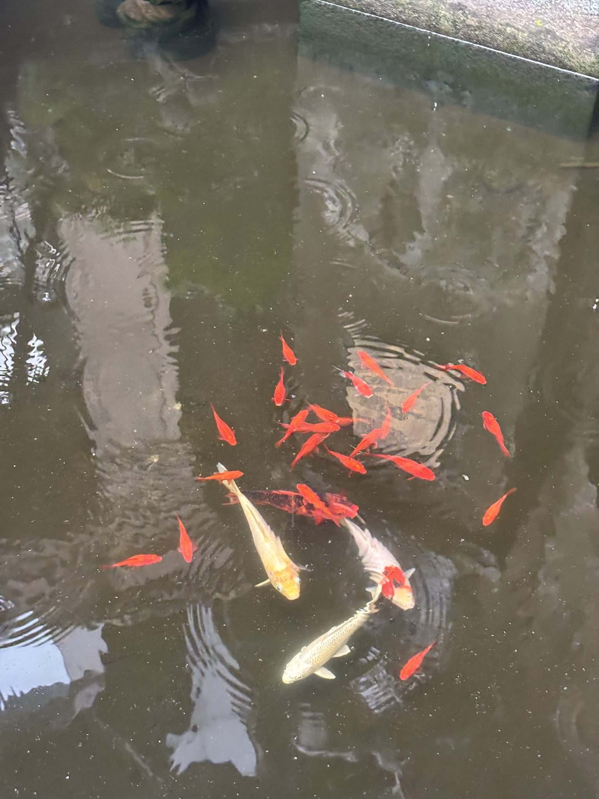
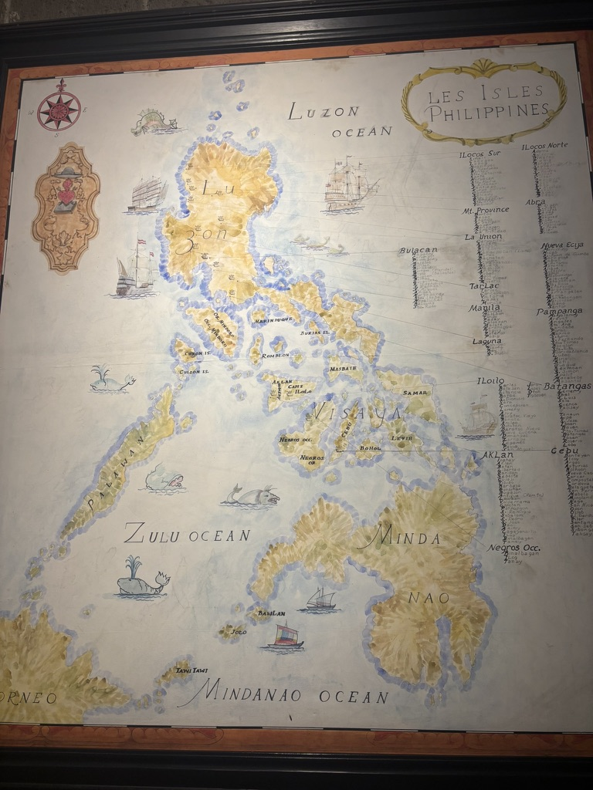
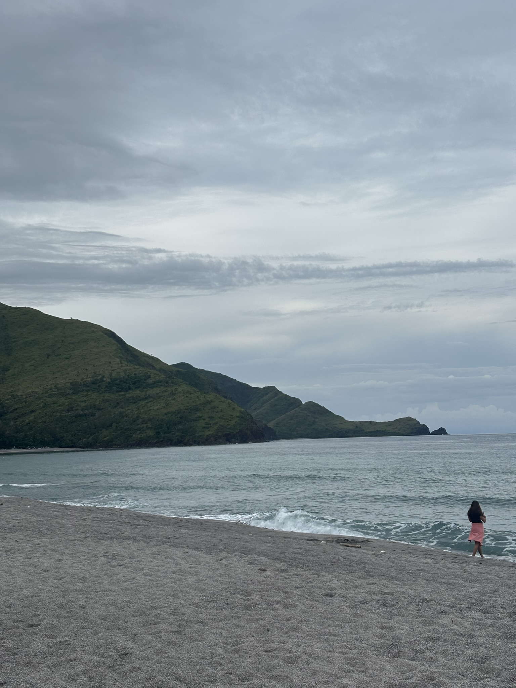
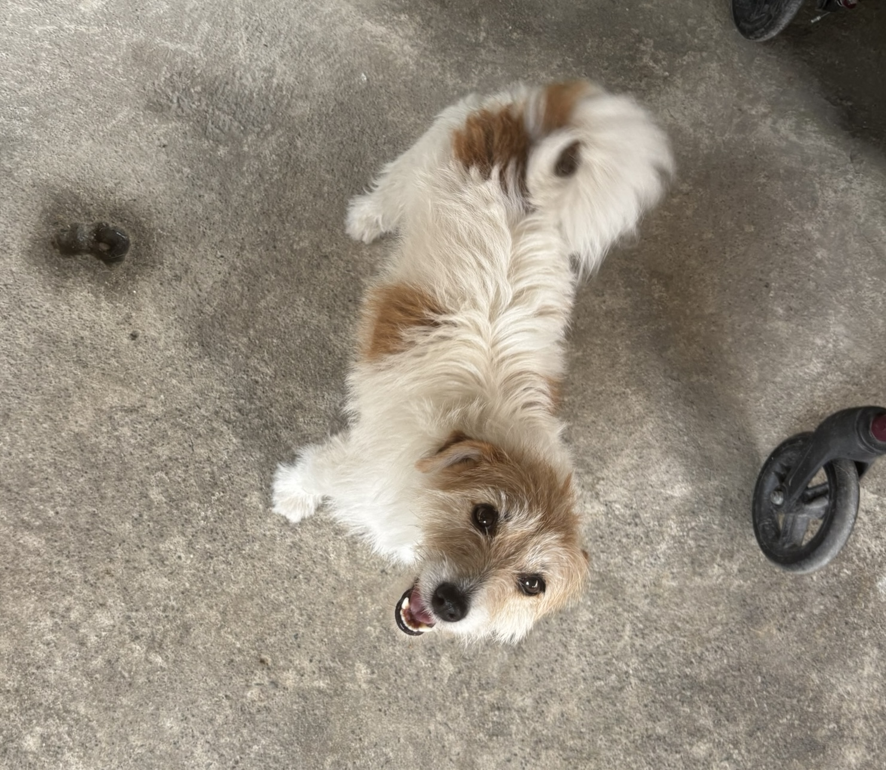

Phoenix Art Museum

It's July 31st today. I'm still struggling with jet lag from my recent trip home but I think my sleep schedule is slowly adjusting itself back to Arizona hours. In the meantime I have been spending pretty all my time home working on this website which I am finally happy to say is in a good (or at the very least usable) state to my current standards. I know in a couple of weeks I probably will become unsatisfied with something which may or may not lead into another extended break from coding altogether. But, I've already been working on my site for the past two years so I know I will come back eventually if that happens. I'm in it for the long run at this point.
Coming back to America is always rough. I'm not the happiest person whenever our vacation from the Philippines ends. I've always been like that. Between recovering from the 15 hour time difference, being sad from not being with my extended family anymore, and just a general malaise due to vacation fatigue, I struggle reintegrating my life back to normal here in the States. That's not to say I had a bad vacation, in fact the opposite, but it's hard coming back to "reality" again. I feel like there's always an underlying feeling of unsatisfaction and almost bitterness being back here. Maybe I'm being OA but I just really wish I could stay in the Philippines just a little longer :P.


Thankfully I have been keeping occupied with this website. I am super proud of what I have learned and have been able to accomplish here. A good thing I've noticed whenever I do come back from the Philippines is I seem to get a second wind in being ambitious with my goals. I don't know what it is but I really want to push myself harder and actually do the things I set myself out to do. Going back to the Philippines reminds me that I have a extremely talented and amazing family on both sides of my parents. I love seeing how much my cousins have grown throughout the years that I missed and seeing them just inspires me.
I've got a lot of things on my plate and a lot more that I want to accomplish. I just need to remember to take it in stride and not overwhelm myself. I'm happy I am able to keep coming back to webmastering easily and can pretty much pick myself right where I left off. Even if all the other things in my life seem stagnant or slow, coding my website has always been something I can see improvement every time I come back to it which makes me happy.

I have work on Monday and will be on my volunteering schedule the week after so I will be back to business pretty soon.The month long vacation was needed and I will stand by it even if I think other people might not think so. Going back to the Philippines every couple years is high on the list of things I think are important in my life. It reminds me that there's more to life than just work and school and reinvigorates me to do those things better when I return. I absolutely love my family, even with all the drama and baggage that come with them. I can't wait to be back in two years.